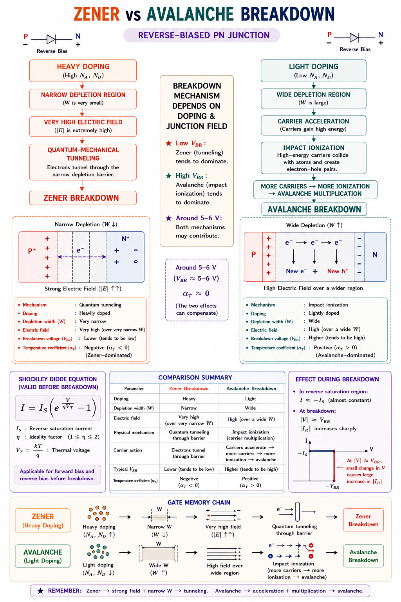
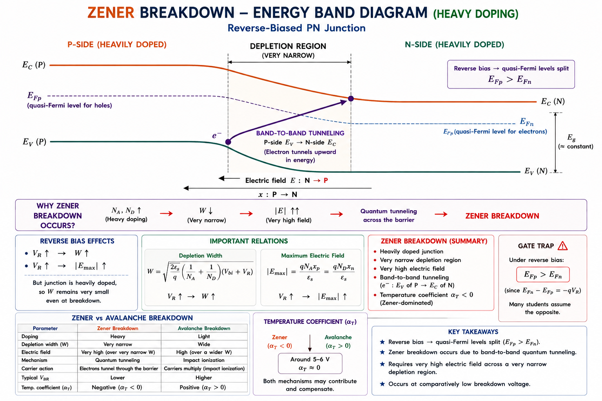
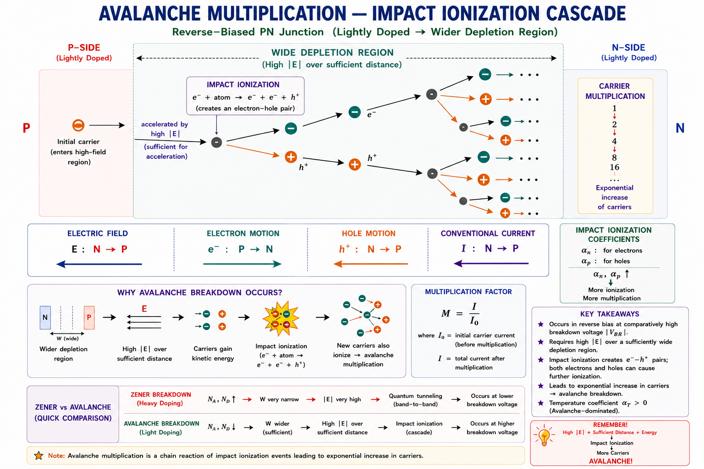
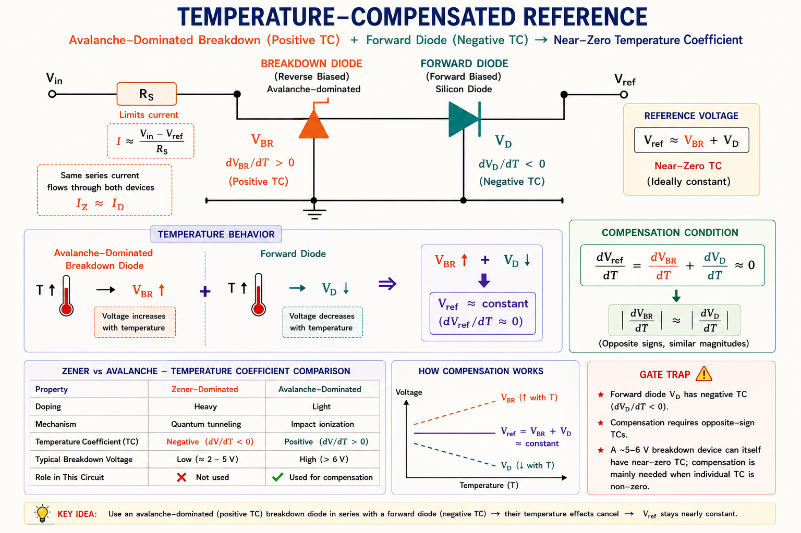
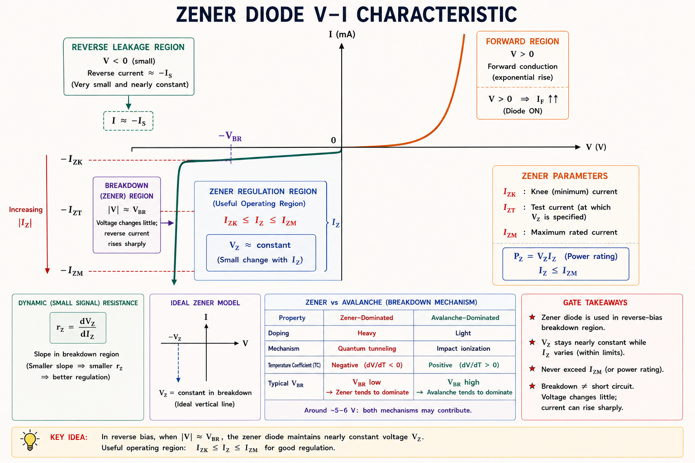
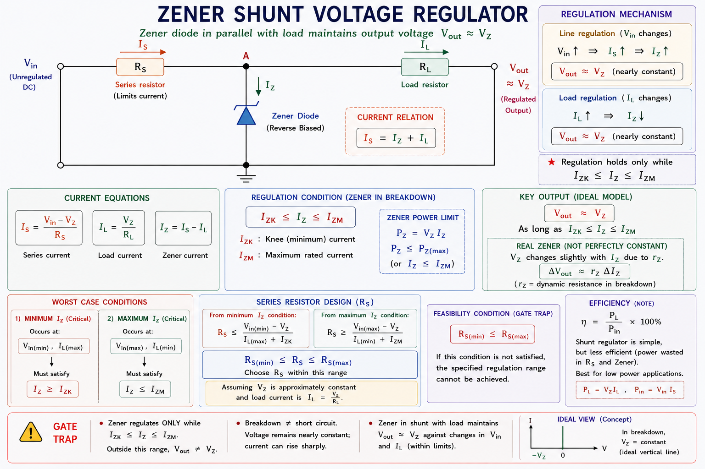

Breakdown mechanisms, Zener vs Avalanche physics, V-I characteristics, voltage regulation circuits, regulator design, load regulation, line regulation — complete GATE EC/EE and IES coverage with full derivations, solved numericals, and previous-year questions.
An ordinary p-n junction diode is designed to conduct in forward bias and block in reverse bias. Its reverse breakdown voltage is considered a failure region — something to avoid. But what if we could engineer that breakdown to be sharp, stable, and repeatable? That is precisely what the Zener diode achieves.[1]
Real power supplies fluctuate. A 5 V supply from a transformer-rectifier can vary between 4.2 V and 6.8 V depending on load current and mains variation. Microcontrollers, op-amps, and sensors need a rock-steady reference voltage. A Zener diode operating in controlled breakdown provides exactly this — a stable voltage across its terminals regardless of current variation within its rated range.
Consider the analogy of a water pressure regulator. A pipe might carry water at wildly varying pressure (5–20 bar), but the regulator at the output maintains a constant 3 bar for the household. The Zener diode is the electrical equivalent — it absorbs excess voltage as heat and presents a fixed terminal voltage to the load.[2]
Zener diodes appear in virtually every piece of electronic equipment:
When a reverse-biased p-n junction experiences a sufficiently large electric field, the reverse current abruptly increases — this is called reverse breakdown. There are two entirely different physical mechanisms that can cause this, and they are distinguished by the junction's doping level:[1]

All reverse breakdown diodes are commercially called "Zener diodes" regardless of actual mechanism. However, for diodes with \(V_Z < 6\,\text{V}\), true quantum tunnelling (Zener effect) dominates. For \(V_Z > 6\,\text{V}\), avalanche multiplication dominates. This distinction, along with their temperature coefficients, is a high-frequency GATE topic.
Zener breakdown was explained by Clarence Zener in 1934. It occurs in heavily doped p-n junctions where the depletion region is extremely narrow (of the order of 10 nm). Under a sufficient reverse electric field, valence-band electrons in the p-side can tunnel directly through the thin depletion barrier into the conduction band of the n-side without acquiring enough thermal energy to cross the bandgap classically.[1]

| Parameter | Condition Required | Physical Reason |
|---|---|---|
| Doping Concentration | Very High (NA, ND > 1018 /cm³) | Narrows depletion width so tunnelling probability is significant |
| Depletion Width | Very Narrow (~10 nm) | Tunnelling probability decays exponentially with barrier width |
| Electric Field | > 107 V/m | Field must tilt bands enough for valence and conduction bands to align |
| Breakdown Voltage | VZ < 5–6 V | High doping → built-in field already large → low external voltage needed |
| Temperature Coefficient | Negative (TC < 0) | Higher T → smaller bandgap → tunnelling easier → breakdown at lower V |
Zener breakdown does not destroy the diode if the current is limited externally. The breakdown is a quantum-mechanical effect — it is completely reversible. The diode returns to normal when the reverse voltage is reduced. Destruction only occurs if power dissipation exceeds the rated \(P_{Z(max)}\).
Avalanche breakdown occurs in lightly to moderately doped p-n junctions that have wider depletion regions. Here, the electric field accelerates thermally generated minority carriers to very high kinetic energies. When these energetic carriers collide with lattice atoms, they knock bound electrons free — a process called impact ionisation.[1]
Each impact ionisation event generates a new electron-hole pair. These new carriers are in turn accelerated, causing further ionisation events. The result is a carrier multiplication avalanche — hence the name. Think of a snowball rolling down a mountain: it starts small but grows exponentially, sweeping up more snow as it descends.

| Parameter | Characteristic | Physical Reason |
|---|---|---|
| Doping Level | Light to moderate | Wider depletion region needed for carrier acceleration |
| Breakdown Voltage | VZ > 6–8 V | Large depletion width → high voltage needed for sufficient E-field |
| Temperature Coefficient | Positive (TC > 0) | Higher T → more lattice vibrations → more scattering → carriers lose energy → need higher V to reach ionisation energy threshold |
| Mechanism | Impact ionisation cascade | Kinetic energy → bond-breaking → electron-hole pair generation |
| Breakdown sharpness | Very sharp | Positive feedback: more carriers → more ionisation → more carriers |
| Property | Zener Breakdown | Avalanche Breakdown |
|---|---|---|
| Mechanism | Quantum tunnelling | Impact ionisation (collision) |
| Doping | Very heavy | Light to moderate |
| Depletion Width | Very narrow (~10 nm) | Wider (~0.1–1 µm) |
| Breakdown Voltage | < 5–6 V | > 6–8 V |
| Temperature Coefficient | Negative (TC < 0) | Positive (TC > 0) |
| Effect of higher T | VZ decreases | VBR increases |
| Noise | Low | Higher (more energetic) |
| Typical Applications | Precision voltage references | Surge protection, ESD |
The temperature coefficient of breakdown voltage is defined as:
Zener effect (tunnelling): TC is negative — as temperature
rises, bandgap narrows, tunnelling becomes easier, \(V_Z\) decreases.
Avalanche effect: TC is positive — as temperature rises,
lattice scattering increases, carriers lose energy more often, a higher voltage is needed to
sustain the avalanche.
At VZ ≈ 6 V: Both effects nearly cancel → TC ≈ 0. These diodes are
used as temperature-stable reference voltages. The classic example is the LM399
(6.95 V reference using Zener + forward junction compensation).
A practical technique used in industry is to series-connect a Zener diode (negative TC) with a forward-biased p-n junction (positive TC ≈ +2 mV/°C per diode). The two effects cancel to produce a near-zero net temperature coefficient. This is the principle behind the temperature-compensated Zener reference used inside precision ADCs and bandgap references.[3]

The V-I characteristic of a Zener diode is the most important diagram to master for GATE. It has three distinct regions of operation:[2]

| Parameter | Symbol | Meaning | Typical Value |
|---|---|---|---|
| Zener Voltage | VZ | Breakdown voltage — voltage across Zener in operating region (at rated IZT) | 2.4 V – 200 V |
| Test Current | IZT | Rated current at which VZ is specified | 5 mA – 2 A |
| Knee Current | IZK | Minimum current for the device to remain in regulation | 0.1 – 1 mA |
| Maximum Current | IZM | Maximum allowable current (set by PZM) | IZM = PZM/VZ |
| Dynamic Resistance | rZ | Slope of V-I in breakdown: rZ = ΔVZ/ΔIZ | 1 Ω – 100 Ω |
| Max Power Dissipation | PZM | Maximum power the device can handle safely | 0.25 W – 50 W |
For circuit analysis, a Zener diode in breakdown is modelled as:
where \(V_{Z0}\) is the threshold voltage (x-intercept of linear approximation), \(r_Z = \Delta V_Z / \Delta I_Z\) is dynamic resistance
The simplest and most analysed Zener regulator consists of a Zener diode in shunt (parallel with the load), with a series resistor RS to limit current:[2]

Constraint 1 — Minimum Zener current: \(I_Z \geq I_{ZK}\) at all times. If
IZ drops below IZK, the Zener exits regulation and Vout drops
below VZ.
Constraint 2 — Maximum Zener current: \(I_Z \leq I_{ZM} = P_{ZM}/V_Z\).
Exceeding this overheats and destroys the device.
Engineers design for worst-case conditions. The Zener current is maximum when Vin is maximum AND RL is maximum (lightest load, smallest IL), and minimum when Vin is minimum AND RL is minimum (heaviest load, largest IL).[2]
| Condition | Vin | RL | IL | IZ | Critical Check |
|---|---|---|---|---|---|
| Worst for max IZ | Vin(max) | RL(max) | Minimum | Maximum | Must be ≤ IZM |
| Worst for min IZ | Vin(min) | RL(min) | Maximum | Minimum | Must be ≥ IZK |
This ensures the Zener has at least IZK current under worst-case conditions (minimum supply, maximum load).
With ideal Zener (rZ = 0), line regulation = 0 and load regulation = 0 — perfect regulation. With practical rZ, smaller rZ gives better regulation. Choosing a larger RS also improves line regulation but reduces efficiency.
When the supply is maximum (most voltage across RS), AND the load is lightest (least current drawn by load), the Zener must absorb the most current. Always check this case for device survival. Mnemonic: "High-V, Low-Load → Zener Overloads".
Step 1: Identify worst case for minimum IZ
Worst case: Vin = Vin(min) = 10 V, IL = IL(max) = 60
mA
For regulation: \(I_Z \geq I_{ZK} = 2\,\text{mA}\)
Step 2: Apply KCL at worst-case minimum
\(I_S = I_Z + I_L\) → \(I_S = I_{ZK} + I_{L(max)} = 2 + 60 = 62\,\text{mA}\)
Step 3: Choose standard value
Choose RS = 82 Ω (next standard E24 value, slightly smaller to be safe)
Step 4: Check maximum Zener current (worst case)
At Vin(max) = 15 V, IL(min) = 20 mA:
IZ(max) = 102 mA ≈ IZM = 100 mA — marginally acceptable. In practice, select a higher-power Zener (IZM = 150 mA, PZM = 0.75 W) to have safety margin. Alternatively, reduce RS slightly to 75 Ω to bring IZ(min) above IZK more comfortably.
Using the practical Zener model, the output voltage variation with input voltage change:
The output changes by only 58 mV for a 2 V (17%) change in input — this is the regulatory action of the Zener. An ideal Zener (rZ = 0) would give 0 mV change. The smaller rZ is, the better the regulation.
If RS = 0, the Zener is directly connected across Vin. There is no current limiting. As soon as Vin exceeds VZ, theoretically infinite current flows → the Zener heats up and is destroyed. RS is not optional — it is essential to set the operating point within safe limits.
When RL = ∞, IL = 0. All the series current IS flows through the Zener: \(I_Z = I_S = (V_{in} - V_Z)/R_S\). This is the maximum Zener current condition. If this exceeds IZM, the Zener is destroyed. Always ensure the regulator is safe at no-load (RL = ∞).
If IL increases too much, IZ decreases below IZK. The Zener exits the steep breakdown region and enters the more gradual pre-knee region. In this region, the Zener terminal voltage drops significantly with small current reductions. The regulator loses its stiff voltage characteristic and Vout falls below VZ.
Voltage regulator design 🟢 HIGH · Breakdown mechanism identification 🟢 HIGH · Temperature coefficient 🟢 HIGH · RS calculation 🟡 MEDIUM · Dynamic resistance effects 🟡 MEDIUM
In the circuit shown, the Zener diode has VZ = 5 V, IZK = 0.2 mA, IZM = 70 mA. RS = 1 kΩ. Vin = 20 V. The minimum value of RL that will keep the Zener in regulation is:
Solution: \(I_S = (20 - 5)/1000 = 15\,\text{mA}\). For regulation: \(I_Z \geq I_{ZK} = 0.2\,\text{mA}\). Maximum \(I_L = I_S - I_{ZK} = 15 - 0.2 = 14.8\,\text{mA}\). Minimum \(R_L = V_Z / I_{L(max)} = 5 / 0.0148 \approx 338\,\Omega\). Closest option: 333 Ω.
The breakdown voltage of a Zener diode is 6 V. With increase in temperature, its breakdown voltage will:
Solution: At VZ = 6 V, the device is on the boundary but the Zener (tunnelling) mechanism is dominant below 6 V. Zener breakdown has a negative temperature coefficient: higher T → smaller bandgap → tunnelling easier → VZ decreases. For > 6 V (avalanche), the opposite is true. Answer: Decrease.
Which of the following statements correctly describes the Zener effect in a p-n junction?
Key Point: Zener effect = quantum tunnelling through a narrow, heavily-doped junction. Avalanche = collision/impact ionisation. These definitions are frequently confused in IES papers.
A 10 V Zener diode (PZM = 500 mW) is used in a shunt regulator with RS = 100 Ω and Vin = 20 V. If no load is connected, the power dissipated in the Zener is:
Solution: No load: \(I_Z = I_S = (20 - 10)/100 = 100\,\text{mA}\). Power: \(P_Z = V_Z \times I_Z = 10 \times 0.1 = 1\,\text{W} = 1000\,\text{mW}\). This exceeds PZM = 500 mW — the Zener would be destroyed. This illustrates the danger of no-load operation with low RS values.
Consider the following statements about reverse breakdown in p-n junctions:
I. Avalanche breakdown has a positive temperature coefficient.
II. Zener breakdown occurs in lightly doped junctions.
III. At 6 V breakdown, temperature coefficient is approximately zero.
IV. Avalanche breakdown is due to quantum mechanical tunnelling.
Which of the above are correct?
Analysis: I ✓ (Avalanche TC is positive). II ✗ (Zener occurs in heavily doped junctions). III ✓ (At ~6 V, two mechanisms cancel). IV ✗ (Avalanche is impact ionisation, not tunnelling). Answer: B.
Have a doubt about Zener diodes, breakdown mechanisms, or regulator design? Ask Aarova AI — your GATE & IES tutor.
Quantum tunnelling through narrow (~10 nm) heavily doped depletion region. \(V_Z < 6\text{ V}\). Negative TC — voltage decreases with temperature. Low noise.
Impact ionisation cascade in wider depletion region. \(V_Z > 6\text{ V}\). Positive TC — voltage increases with temperature. Used for ESD protection.
At \(V_Z \approx 6\text{ V}\), Zener (−TC) and Avalanche (+TC) effects cancel → TC ≈ 0. Ideal for temperature-stable voltage references in precision circuits.
\(R_S = (V_{in\_min} - V_Z) / (I_{ZK} + I_{L\_max})\). Check \(I_{Z\_max}\) at no-load. Check \(I_{Z\_min}\) at full-load. Both constraints must hold.
\(r_Z = \Delta V_Z/\Delta I_Z\). Smaller \(r_Z\) = better regulation. Line regulation = \(r_Z/(R_S + r_Z)\). Ideal Zener has \(r_Z = 0\).
Voltage reference in ICs, overvoltage protection, waveform clipping, battery management, ADC/DAC reference, voltage translation between logic levels.
Special Diodes continued — Tunnel Diode (negative resistance, Esaki diode), Schottky Diode (metal-semiconductor junction, zero storage time, high-speed switching), Varactor Diode (voltage-controlled capacitance, PLL and tuner applications), PIN Diode and LED operation with GATE and IES coverage.
All technical content is derived from the following standard textbooks. All explanations, derivations, SVG diagrams, and examples are original to Aarova AI. No material is reproduced verbatim from any source.